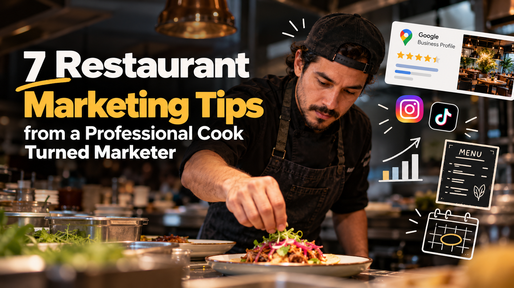

7 Restaurant Marketing Tips from a Professional Cook Turned Marketer

I spent more than eight years on the line before I studied digital marketing. That means I've been on the receiving end of a lot of marketing ideas: the surprise two-for-one promo nobody told the kitchen about, the Instagram post for a dish that was 86'd an hour earlier, the influencer night that landed on our busiest Saturday.
Most restaurant marketing advice is written by people who have never worked a Friday rush. These tips come from both sides of the pass. They're built for owners and managers who want more guests without burning out their team.
1. Treat your Google Business Profile like your front door
Before most people try a new restaurant, they search on Google Maps. Your Google Business Profile is often the first thing a hungry guest sees, and it frequently matters more than your website.
Make sure you have:
- Correct hours, including holiday hours. Nothing loses a guest faster than showing up to a locked door.
- Your real menu, uploaded or linked, with current prices.
- Fresh photos every month. Upload dishes, the dining room, the patio, and your team. Profiles with recent photos look alive.
- The right categories. "Mexican restaurant" plus "Taco restaurant" is stronger than one generic category.
This is the cheapest, highest-impact marketing you can do. It costs nothing but time.
2. Reply to every review, especially the bad ones
Future guests read how you respond to reviews, not just the reviews themselves. A calm, specific reply to a one-star review tells them you care and you're professional.
Keep replies short. Thank the guest, acknowledge the issue without arguing, and invite them back or to contact you directly. For positive reviews, mention something specific, like "So glad you loved the birria. It's our chef's favourite too." Generic copy-paste replies look automated.
3. Market your slow nights, not your busy ones
This is the lesson I learned in the kitchen. Many restaurants push promotions when they're already full, which only creates longer waits and a stressed team.
Look at your sales and find your dead zones. For many restaurants it's Monday to Wednesday, or the 2 to 5 p.m. gap. That's where your marketing budget should go:
- A Tuesday industry night for other hospitality workers
- A weekday happy hour with one standout drink
- A midweek set menu or chef's special
Filling an empty Tuesday is pure growth. Adding more guests to a packed Saturday often just adds complaints.
4. Never launch a promo your kitchen can't handle
Before any campaign goes live, ask the chef two questions: Can we prep for this? and Can we plate it at speed?
A viral dish that takes eight minutes to plate will crush your ticket times. A discount that doubles covers without extra staff will hurt your reviews. Good restaurant marketing is timed to kitchen capacity, not just to reach. Bring your kitchen lead into the planning, and brief the whole team before launch so servers can explain the offer confidently.
5. Film content during prep, not during service
Short videos on Instagram and TikTok are one of the best ways to show off your food, but nobody has time to film at 7 p.m. on a Friday.
Film during prep instead. Kitchens are full of great content in the afternoon: tortillas coming off the comal, a sauce reducing, a knife breaking down fish, the team plating a new special. Shoot vertically, keep clips to 10 to 20 seconds, and let the sounds of the kitchen do the work. Real kitchen moments feel more trustworthy than polished ads, and they cost nothing to make.
6. Write menu descriptions that make people hungry
Your menu is a sales tool. "Chicken tacos, $16" does nothing. Compare it with "Charred achiote chicken tacos, pickled red onion, salsa verde, handmade corn tortillas."
A few rules:
- Name the cooking method (charred, slow-braised, crispy).
- Mention one or two standout ingredients, not every component.
- Use the same language on your website and Google profile. It helps guests, and it helps you appear in searches for specific dishes.
7. Plan around Vancouver's seasons
Vancouver dining follows the weather. Plan your marketing calendar around it:
- Patio season (roughly May to September): Promote outdoor seating, fresh drinks, and lighter dishes.
- Rainy season (October to March): Lean into comfort food, soups, cozy interiors, and takeout.
- Dine Out Vancouver (January to February): The city's annual restaurant festival brings guests actively looking to try new spots. Plan your menu and promotion early.
Also think about your community. Vancouver is multilingual, and a few posts or menu notes in another language your guests speak can make a real difference.
The bottom line
The best restaurant marketing isn't about doing more. It's about doing the right things at the right time, with your kitchen in the loop. Start with your Google profile and reviews this week, then pick one slow night to build a campaign around.
Misael Olivares is a digital marketer with more than eight years of experience in professional kitchens. He helps restaurants and food brands grow with marketing that works for the front of house and the back. Want a quick look at your restaurant's online presence? Get in touch.
Related: MeltnBite Instagram campaign case study · El Molino pre-launch campaign